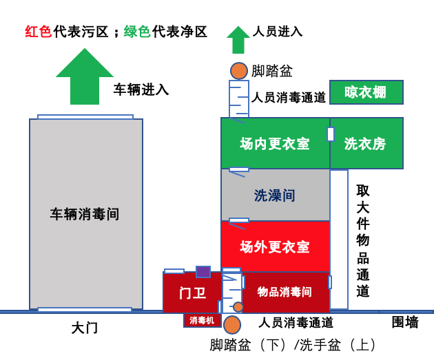
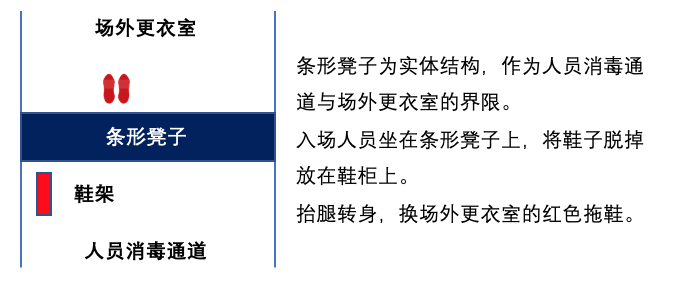

猪场门卫洗澡间设置及入场人员管理规范
2019年3月30日
背景：
门卫是农场的第一道生物安全屏障，合理设置洗澡间、做好入场人员管理可以有效阻断外来病原，切断传播途径保障农场生物安全！

进场人员生物安全管理规范：
1. 门口悬挂警示牌，严禁外来人员进入。
2. 入场人员需要提前与场区沟通：入场时间、来访人数、近期拜访的区域。
3. 场长或兽医允许方可入场。
4. 农场提前准备清洗消毒过的衣物。
5. 来访车辆严禁进入场区，需在场外指定停车点清洗消毒。
6. 入场人员需在门卫处登记记录：入场时间、最近1周拜访区域、如接触过疫区严禁入场，并备案记录。
7. 需要带入场区的小件物品如眼镜、手表、手机交由门卫用酒精擦拭消毒并放入紫外线柜消毒。
8. 进入人员消毒通道：
1） 入场人员走人员消毒通道并喷雾消毒。
2） 喷雾消毒选用1%聚维酮碘溶液。
3） 喷雾消毒设置时间为1分钟。
4） 入场人员手臂清洗消毒，用小刷子刷试指甲，确保手臂以下全部清洗。
5） 洗手消毒液选用1%聚维酮碘溶液。
6） 需带入场区大件物品放入物品消毒间。
7）物品取出放在货柜上，货柜要求多层并通透，臭氧消毒时间至少1小时。
8）将鞋子脱掉换场外更衣室内的红色拖鞋。

9. 进入场外更衣室：
1） 脱掉所有衣物，放在衣柜内。
2） 在进入洗澡间的门口处换灰色拖鞋，具体操作如步骤8。
10. 入场人员洗澡：
1） 入场人员进入洗澡间沐浴。
2） 保证洗澡时间至少在5分钟以上。
3） 洗澡结束在进入场内更衣室门口处换绿色拖鞋进入场内更衣室，具体操作如步骤8。
11. 更换场内工作服：
1) 更换场内工作服,走人员消毒通道。
2) 喷雾消毒同样保证1分钟。
3) 换生活区水靴/鞋子。
4) 踩脚踏盆方可进入生活区。
12. 人员离场：
1） 人员离场需在场内更衣室将衣物投入洗衣房的消毒桶内浸泡。
2） 选用1%聚维酮碘溶液浸泡衣物，浸泡时间至少30分钟，清洗、晾干备用。
3） 离场人员经过洗澡间、场外更衣室换衣服，走消毒通道离场。
工具准备：
1. 脚踏盆，2个，脚踏消毒；
2. 洗手盆，1个，进场人员手部消毒；
3. 小刷子，1个，指甲刷试处理；
4. 洗手盆架，1个，进场人员手部消毒；
5. 冲洗机，1台，门口及车辆消毒；
6. 紫外线柜，1个，手机、手表、眼镜等小件物品消毒；
7. 紫外线灯，若干，手机、手表、眼镜等小件物品消毒；
8. 酒精、酒精棉，若干，小件物品消毒；
9. 进场人员记录表，若干，进场人员登记；
10. 货架，若干，物品消毒；
11. 雾化消毒机，2台，人员消毒通道消毒；
12. 臭氧消毒机，1台，物品消毒；
13. 衣柜，2套，更衣室摆放衣物；
14. 浴室保温灯，3套，更衣室、洗澡间取暖；
15. 鞋架，3套，场外更衣室、洗澡间、场内更衣室；
16. 红色拖鞋，5双，进场更衣室专用；
17. 灰色拖鞋，5双，洗澡间专用；
18. 绿色拖鞋，5双，场内更衣室专用；
19. 热水器，1台，洗澡间专用；
20. 工作服，若干，进场人员更换；
21. 袜子，若干，进场人员更换；
22. 水靴/生活区鞋，若干，进场人员更换；
23. 水靴鞋架，1个，摆放生活区专用水靴；
24. 消毒桶，1个，混合消毒剂；
25. 毛毯，2条，铺在人员消毒通道内；
26. 消毒液，若干，用于人员、车辆、物品、场区消毒；
27. 洗衣机，1台，衣物清洗；
28. 大桶，2个，洗衣房内衣物浸泡消毒；
29. 晾衣架，若干，晾晒衣物；
30. 洗发水、沐浴露，若干，人员进场洗澡；